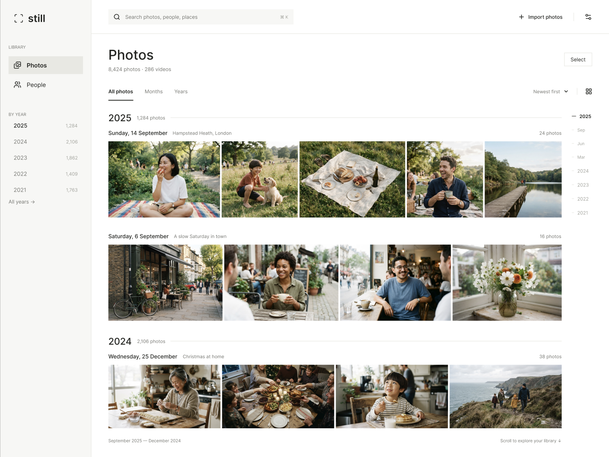

A private photo library
for your Mac.
Your existing photo folders, in one quiet place.
Local, offline, yours.
Download for Mac
Apple Silicon only · macOS 11+
Intel MacNot available
WindowsNot available
LinuxNot available

Timeline
Browse your existing photo folders in one calm, scrollable timeline.
People
Find familiar faces with on-device face grouping.
Places
See where each photo was taken on a map in its details.
Your photo formats
Live Photos, HEIC, GIF and video, all in your library.
Nothing leaves your Mac.No account, no cloud, no tracking. Fully offline.
First launch
Still isn’t notarized by Apple yet, so macOS may block the first launch.
- Drag Still to Applications.
- Open Still once, then dismiss the macOS warning.
- Go to System Settings → Privacy & Security → Open Anyway.
Or, use Terminal:
xattr -dr com.apple.quarantine /Applications/Still.appKeep Still up to date
Still checks for updates on launch, or any time from the menu bar.
Still → Check for Updates…
Then choose Restart to Update.